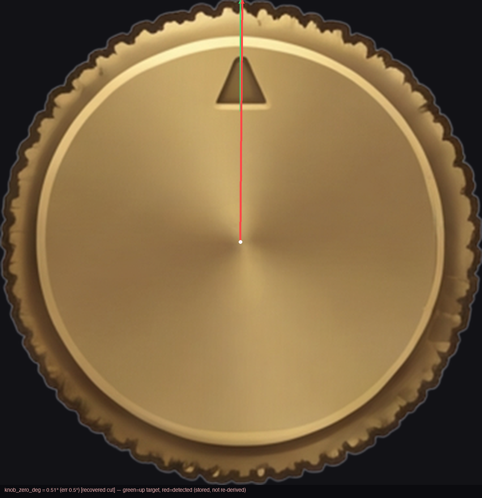
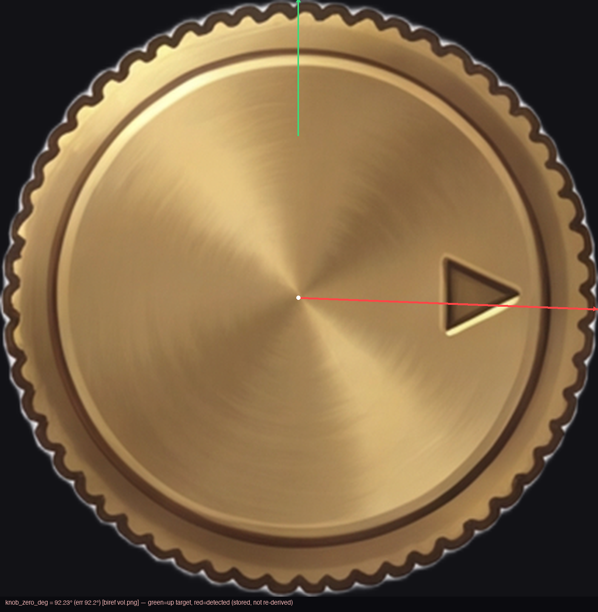
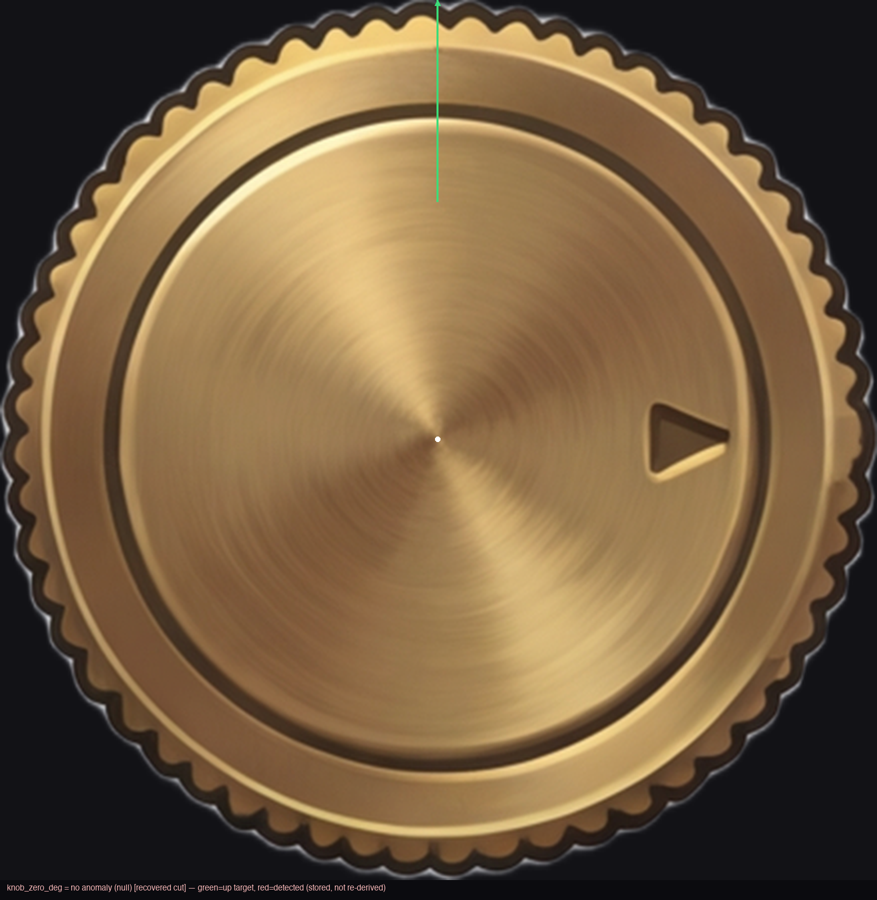
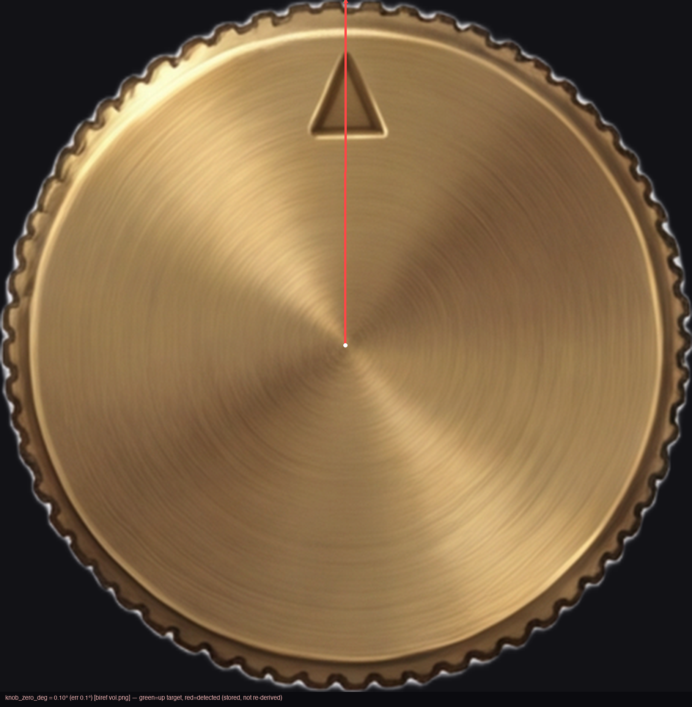
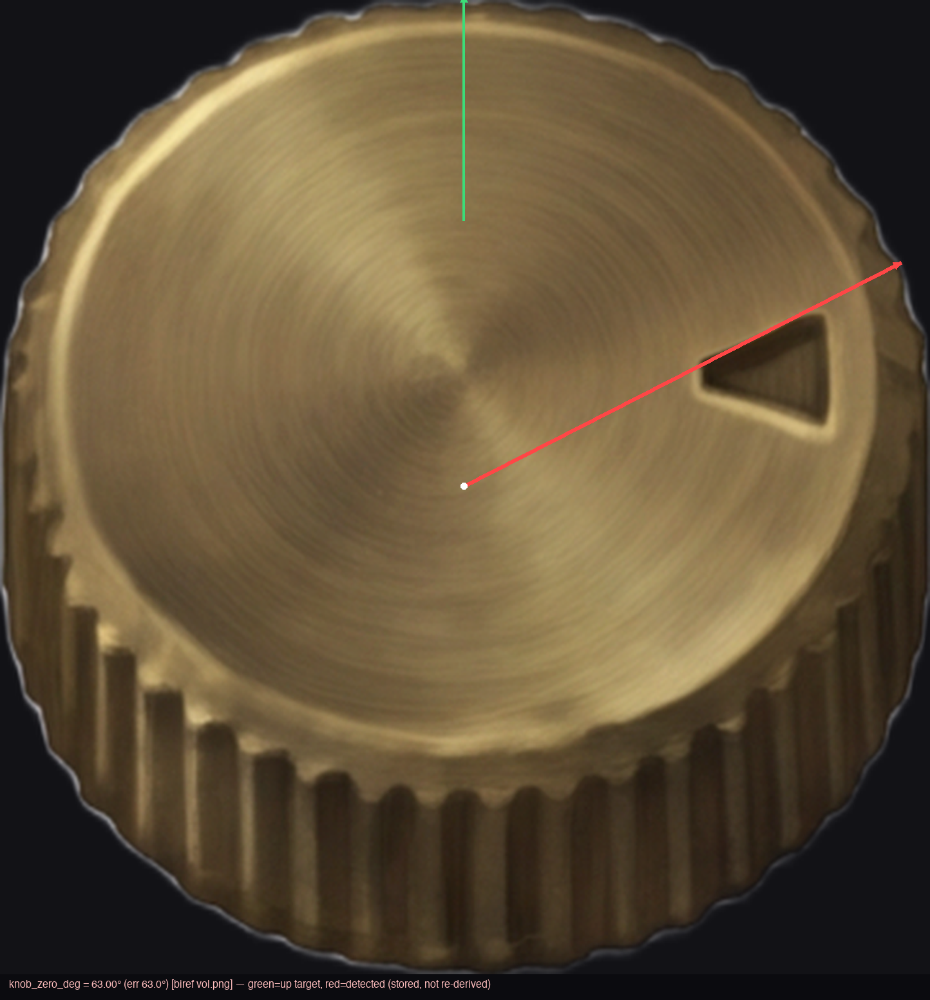
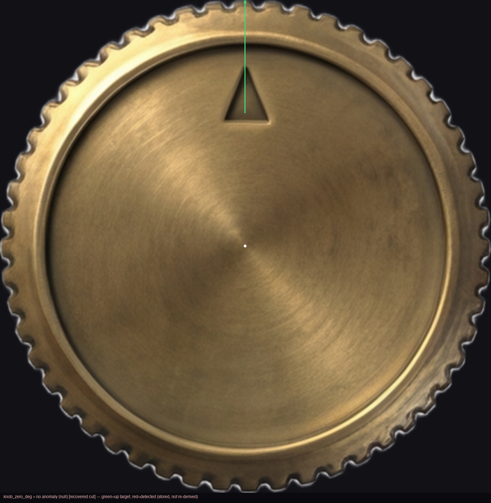
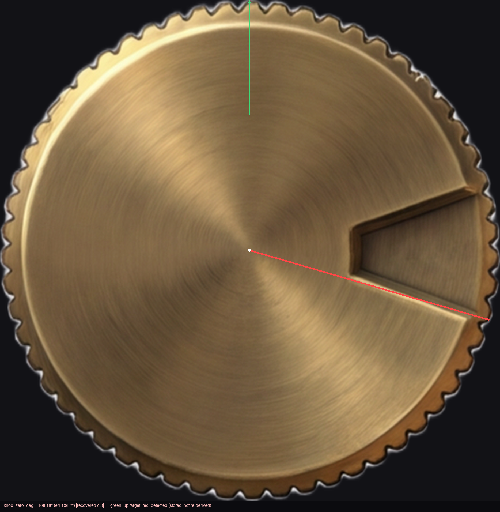
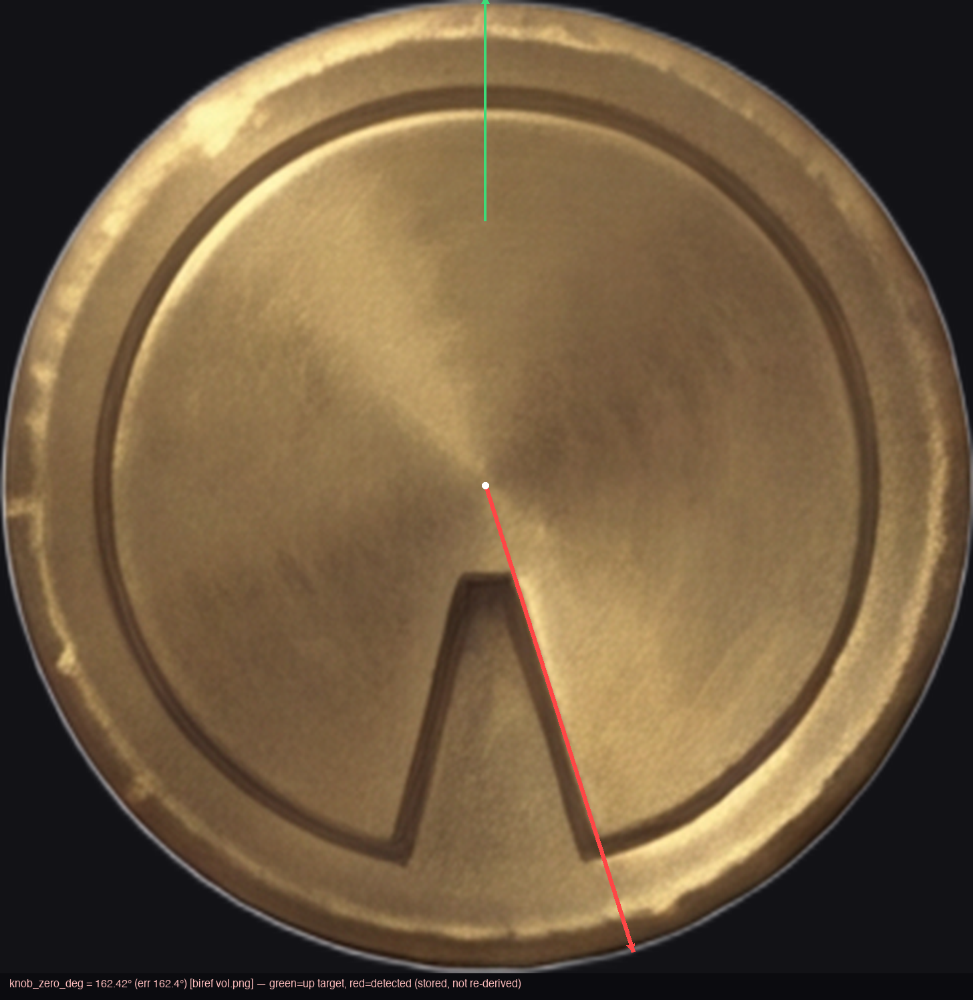

User insight (verbatim): "maybe instead of all this bullshit [detect-and-counter-rotate] you can
just specify in prompt that the tick on knob face should point upwards 0 degrees?" — this experiment
tests whether the paint model actually OBEYS that instruction, measured independently by the
existing detector, not by re-asking the model.
Before / after angular distribution
Dots = individual detected knob_zero_deg values (0° = up,
clockwise). Green bands mark the ±10° compliance window at both wrap edges.
Per-generation crops (angle drawn from stored regions.json values, never re-derived)
steam-porthole · seed 101PASS

knob_zero_deg = 0.51 · error from up = 0.5°
adjudication: pointer visually UP; mainline biref missed the cut (parts-tray card), recovered via cell-crop
steam-porthole · seed 202FAIL

knob_zero_deg = 92.23 · error from up = 92.2°
adjudication: pointer visually at ~3 o'clock — model disobeyed the clause
steam-porthole · seed 303FAIL

knob_zero_deg = None · error from up = n/a
adjudication: pointer visually at ~100° (right); detector abstained (z=4.3 < 5 bar) — non-compliant either way
steam-porthole · seed 404PASS

knob_zero_deg = 0.10 · error from up = 0.1°
adjudication: pointer visually UP — clean compliance
myst-arcanum · seed 101FAIL

knob_zero_deg = 63.00 · error from up = 63.0°
adjudication: pointer visually ~90-105° (cap cut with a 3/4-perspective CAMERA violation, skews the read)
myst-arcanum · seed 202FAIL

knob_zero_deg = None · error from up = n/a
adjudication: pointer visually UP but embossed low-contrast; detector abstained (z=4.2 < 5 bar) — visually compliant, unmeasured
myst-arcanum · seed 303FAIL

knob_zero_deg = 106.19 · error from up = 106.2°
adjudication: keyway notch at ~100° — model disobeyed
myst-arcanum · seed 404FAIL

knob_zero_deg = 162.42 · error from up = 162.4°
adjudication: wedge notch points DOWN (~162°) — model disobeyed
Conclusion
Compliance is LOW: 2/8 detector-measured within ±10° of up (steam-404 at 0.10°, steam-101 at
0.51° via recovered cut); +1 more (myst-202) is visually up but embossed too low-contrast for the
detector's z-bar → 3/8 by best adjudication. The threshold for flipping the architecture was
6/8. And the baseline was NOT random: the task's historical pre-fix values (85.6°, 144°, 95°,
355°, 4°, 359°) are bimodal — 3/6 already within ±10° of up (errors 5°, 4°, 1°) — so clause-ON
(2-3/8, 25-38%) shows no improvement over clause-OFF (3/6, 50%) at these sample sizes. The
model's competing prior (a right-side pointer at ~60-110°, seen in 4/8 gens here and 3/6
historically) is not overridden by one light sentence.
Verdict: detect-and-counter-rotate stays PRIMARY. KNOB_POINTER_UP stays default OFF —
the clause is not demonstrably harmful, but it is not demonstrably a useful prior either, and it is
not free (prompt bulk costs quality, per the bproof lesson). No build_player.py change is specced —
the counter-rotation fallback demotion is moot at this compliance level.